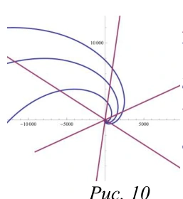
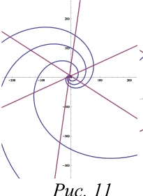
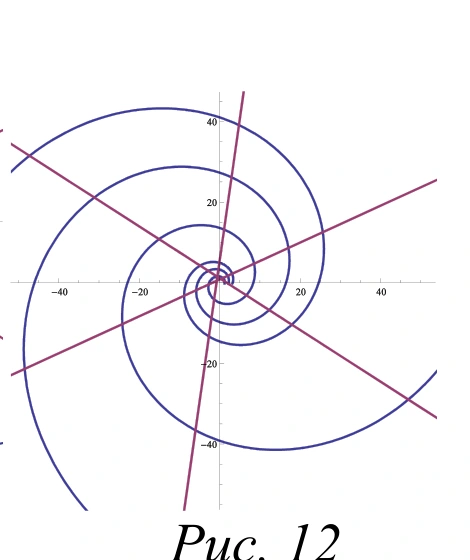

Laboratorio de ecuaciones diferenciales · Universidad del Quindío
Descubre las curvas
antes de resolverlas.
Elige una familia conocida, cambia el ángulo isogonal y pulsa cualquier punto del plano. El campo de direcciones trazará la trayectoria buscada.
01 / Explorar
Tu plano. Tus decisiones.
Plano de trayectorias Rectas radiales
Haz clic o toca para elegir un punto P
Familia conocida Trayectoria buscada Tangentes en P
P = (2.00, 1.00)
02 / Comprender
De la geometría a la EDO.
Derivamos y eliminamos el parámetro
El valor de la derivada depende del punto en la familia conocida.
Aplicamos el ángulo constante
La pendiente de la curva buscada se obtiene de la rotación de las tangentes.
Integramos la EDO
Ver por qué aparece esta fórmula +
En un punto regular, la familia conocida tiene pendiente , mientras que la buscada tiene . Como , se aplica la identidad de la tangente de una diferencia.
En caso de tangente vertical, la representación como pendiente no está definida. Por eso el trazador utiliza vectores tangentes, que también describen esa dirección.
03 / Comprobar
¿Puedes alcanzar el ángulo?
Sin cambiar de familia, usa el deslizador superior hasta construir una trayectoria que forme el ángulo solicitado con la familia conocida. Después verifica tu aproximación.
TU MISIÓN
Construir un ángulo de 60°
04 / Aplicar
De las trayectorias a los materiales.
Galanin y Feodorova estudiaron la disposición de fibras en construcciones planas de materiales compuestos. La orientación de las fibras entra en un modelo mecánico de elasticidad; las trayectorias isogonales sirven para explorar configuraciones geométricas de refuerzo.



Precisión científica: el parámetro k de estas figuras corresponde al modelo del artículo; no se identifica automáticamente con nuestro k = tan γ. La web no calcula resistencia, tensiones ni otros resultados mecánicos sin un modelo validado.